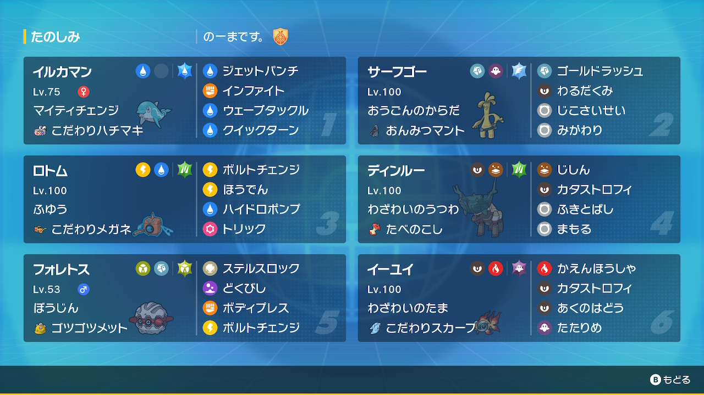

動画
パーティ画像

努力値
イルカマン @ こだわりハチマキ
マイティチェンジ / ようき
175-122(252)-92-x-83(4)-167(252)
サーフゴー @ おんみつマント
おうごんのからだ / ひかえめ
163(4)-x-142(212)-174(44)-112(4)-135(244)
ウォッシュロトム @ こだわりメガネ
ふゆう / ひかえめ
145(156)-x-142(116)-162(180)-128(4)-113(52)
ディンルー @ たべのこし
わざわいのうつわ / わんぱく
257(212)-130-159-x-131(244)-72(52)
フォレトス @ ゴツゴツメット
ぼうじん / のんき
182(252)-x-211(252)-80-81(4)-54
イーユイ @ こだわりスカーフ
わざわいのたま / おくびょう
130-x-100-187(252)-141(4)-167(252)
マイティチェンジ / ようき
175-122(252)-92-x-83(4)-167(252)
サーフゴー @ おんみつマント
おうごんのからだ / ひかえめ
163(4)-x-142(212)-174(44)-112(4)-135(244)
ウォッシュロトム @ こだわりメガネ
ふゆう / ひかえめ
145(156)-x-142(116)-162(180)-128(4)-113(52)
ディンルー @ たべのこし
わざわいのうつわ / わんぱく
257(212)-130-159-x-131(244)-72(52)
フォレトス @ ゴツゴツメット
ぼうじん / のんき
182(252)-x-211(252)-80-81(4)-54
イーユイ @ こだわりスカーフ
わざわいのたま / おくびょう
130-x-100-187(252)-141(4)-167(252)